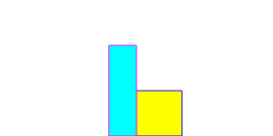

Graphics
Writing graphics programs is almost as easy as writing Karel programs. In this chapter we will learn how to write our first graphics programs. We are also taking our first steps towards object-oriented programming.
.
 Graphics Model
Graphics Model
The graphic model we will use is very simple and may remind us of our time in kindergarten, when we still created the greatest works of art with pieces of felt. There are different pre-cut shapes, but you can also cut out your own shapes and arrange them on a felt board to create major works of art.
In our 'felt assortment' there are rectangles (GRect), circles (GOval), lines (GLine), polygons (GPolygon), arcs (GArc), images (GImage) and labels (GLabel). These can be of any color and size, and we can place them anywhere on our felt board.
.
Graphics Programs
Our basic structure, so to speak our felt board, is the graphics program. It is very similar to our Karel programs:
function setup() {
createCanvas(300, 150);
frameRate(5);
// your code...
}
function draw() {
update();
}
Instead of the run(), we now have the setup() function. So our code goes into the setup() function We will ignore the draw() function for quite a while.
.
 GRect
GRect
We get started by drawing rectangles, which we call GRect. A rectangle has a width and height, as well as an x and y position. The following two lines show how to create and draw a rectangle:
let fritz = new GRect(50, 50); add(fritz, 150, 100);
In the first line we create a new rectangle that is 50 pixels wide and 50 pixels high. The rectangle also gets a name, it is called 'fritz'. The name can be almost arbitrary, and 'fritz' is as good a name as any. It's like we picked one of the felt rectangles and we are still holding it in our hands. Next, we have to add it to our felt board, and we do that with the second line: we add 'fritz' at the position (150, 100) to our felt board.
The felt board is actually called canvas. It is usually a little more than 300 pixels wide and just under 150 pixels high. But we can also make it bigger or smaller. Very important, x goes from left to right as usual, but y goes from top to bottom, this may be a little unusual.
.
Colors
Playing with felt pieces would be quite boring if all felt pieces had the same color. It is the same with graphics programs. So if we want to change the color of our rectangle, we set its color with the following line:
fritz.setColor(Color.BLUE);
In this case, the border of 'fritz' is drawn in blue. In fact, we say, 'hey fritz, why don't you change your color to blue'.
Filled rectangles are of course much nicer. So we can tell 'fritz' that it should be filled:
fritz.setFilled(true);
Sometimes you want the color of the border to be different from the color of the inside. For this 'fritz' has the setFillColor() method:
fritz.setFillColor(Color.YELLOW);
Now 'fritz' is a yellow rectangle with a blue border.
.
Multiple Rectangles
Playing with felt pieces would also be boring if there were only one felt piece. Similarly, we can add as many rectangles as we want. We just have to make sure that every new rectangle has a different name:
let lisa = new GRect(30, 100); lisa.setColor(Color.MAGENTA); lisa.setFilled(true); lisa.setFillColor(Color.CYAN); add(lisa, 120, 50);
If we add these lines to our program above, we see two rectangles, 'fritz' and 'lisa'.
.
Messages
Messages, functions, methods, commands: different names for the same concept. With Karel they were called move() and turnLeft(). Now they are called setColor() and setFilled(). We can write our own, like moveToWall(), or use existing ones. With Karel it was a little easier, because there was only one Karel. Now it gets a little bit more complicated, because there can be more than just one rectangle. That's why we always have to say for whom the message is intended, so
fritz.setColor(Color.BLUE);
changes the color of 'fritz', but
lisa.setColor(Color.BLUE);
changes the color of 'lisa'. In the first case we send the message to 'fritz', in the second to 'lisa'. What message are we sending? The 'setColor()' message. Alternatively, we say that we call the 'setColor()' method of 'fritz', or we let 'fritz' execute the 'setColor()' method.
.
Exercise: Flag
Karel always wanted to travel. To get him in the mood for his big trip, we want to write a graphics program that draws the flag of the country he would like to travel to. (However, Karel only likes countries with simple flags!)
.
.
 GOval
GOval
If we want to draw circles or ellipses then we use GOval. GOval has a width and height like a rectangle, and the ellipse drawn is bordered by this rectangle, so to speak. Otherwise a GOval has the same methods as a GRect. The syntax is also identical:
let redDisk = new GOval(20, 20); redDisk.setColor(Color.RED); redDisk.setFilled(true); add(redDisk, 125, 125);
.
GLine
To draw lines there is the class GLine. It needs the x and y coordinates of the two points that should be connected by the line:
let leftRoof = new GLine(125, 95, 165, 65); add(leftRoof);
Lines can also be colored. If you want to, you can also change the thickness of lines, or you could draw several lines next to each other.
.
Exercise: House with Tree
By now we know enough to create our first piece of digital art: as in kindergarten we want to draw a tree, a house with a roof and the sun. For this we use nicely colored GOvals, GRects and GLines.
.
.
.
GImage
Quite useful is the GImage class. It allows us to add images to our canvas:
let om = new GImage(60, 10,
"Ch2_Graphics/TH-Nuernberg-Logo.jpg");
om.scale(1.7);
add(om);
The GImage class understands the gif, jpg and png formats. Also, images can be scaled with the scale() method.
.
.
 GLabel
GLabel
From time to time we need some text with our graphics, then the GLabel comes in handy. It is as easy to use as the other graphic objects:
let hans = new GLabel("Hello World!");
add(hans, 40, 85);
If we don't like the font of our label, we can change it. You can choose the font type, the font size, and if you like you can also use an italic or bold font:
hans.setFont('Arial');
hans.setFontSize(36);
hans.setColor(Color.RED);
You have to be a little careful with the positioning: GLabels are positioned with respect to their baseline.
.
Exercise: HelloWorld
As a little exercise we write our first 'Hello World' program. Simply insert the lines above into the setup() function of a graphics program and execute it.
.
.
.

GArc
GArc draws an arc, i.e. a part of a circle or an ellipse. As with the ellipse we have to specify its width and height, as well as where the arc should be drawn. In addition, we need to specify which part of the arc should be drawn. This we do by specifying where the arc should begin (in degrees) and how long it should go (also in degrees):
let archie = new GArc(150, 150, 0, 45); add(archie, 75, 25);
The above lines draw an arc starting at 0 degrees and spanning 45 degrees counter-clockwise.
In the projects we will see how useful and versatile arcs are.
.
Exercise: PacMan
A first practical application for an arc is PacMan. It is simply a filled GArc starting at 45 degrees and spanning an arc of 270 degrees.
.
.
.
.

GPolygon
GPolygon is the last graphics class we need to learn. A polygon is made up of points, also called vertices, connected by lines. With addVertex() we add one point after the other. The polygon itself knows how to connect the points. Polygons are always closed, so you can fill them if you want to.
let diamond = new GPolygon(); diamond.addVertex(0, 0); diamond.addVertex(50, 50); diamond.addVertex(100, 0); diamond.addVertex(50, -50); add(diamond, 50, 50);
.
Window Size
Sometimes we want a different sized window. This can be done quite simply by modifying the line
createCanvas(300, 150);
at the beginning of our setup() method.
.
Object Orientation
Although we have not explicitly mentioned this, in the examples above we have been using objects and classes. Because fritz, lisa, hans and archie are objects, and GRect, GOval, GLabel are classes. At the beginning it is not always easy to distinguish between the two, but it actually is not that difficult:
- For example, we say 'fritz is a GRect' or 'archie is a GArc'. But we never say 'GRect is a fritz'.
- We can have several objects, e.g. there is a fritz and a lisa object (both are GRects), but there is only one GRect class.
To make this clear in the code, the names of objects always start with lowercase letters, while class names always start with uppercase letters.
SEP: Objects start with lowercase letters, classes with uppercase letters.
.
Review
What have we learned in this chapter? We have
- created our first graphics program,
- got to know the classes GRect, GOval, GLine, GImage, GLabel, GArc and GPolygon,
- seen how we can change the color of objects,
- seen that messages, functions, methods and commands are all the same and
- we learned to use more than one object.
But the most important thing in this chapter was that we took our first steps in object orientation.
.
Projects
With our new skills, we will now realize a few interesting graphics projects. You can find many more examples in Eric Roberts's book [3].
.
 Try it
Try itSkyscraper
Karel loves Chicago, and Chicago is full of skyscrapers. So we want to draw a high-rise at night for Karel. Basically, it is just a few GRects. With the following line
setBackground(Color.DARK_GRAY);
we can set the background color of the canvas to dark grey. If you want you can introduce a function called drawWindows(), which is responsible for drawing the windows.
.
 Try it
Try itWall
Next we want to build a wall consisting of 15 bricks (GRect). At the moment this is still a lot of code to write. Later we will see how to do this a lot easier.
.
.
.
 Try it
Try itArchery
Karel likes to practice archery from time to time (remember RobinHoodKarel). So he needs a target for that. This consists of an inner red ring with 20 pixels diameter, a middle white ring with 40 pixels diameter and an outer red ring with 60 pixels diameter. If you like, you can use functions for your code to become more readable (our first SEP), namely drawInnerRing(), drawMiddleRing() and drawOuterRing().
.
OlympicGames
Archery has been an Olympic discipline since 1972, and that is why Karel is planning to qualify for the next Olympic Games. He still has to practice a lot, but in the meantime we'll draw the Olympic rings for him.
There are several approaches to solve the problem.
- The first is to paint only the borders of the GOval, so we set setFilled(false). Then the rings are very thin and don't look quite right.
- Paint two GOvals, one slightly larger with the desired color and the other slightly smaller with white color. However, at the intersections this looks a little funny.
- Finally, we can paint several rings (e.g. five), each with a thickness of one, on top of each other. This looks pretty decent.
However, this is still not perfect, when comparing it to the original on Wikipedia [7]. Graphics is hard.
.
PieChart
A nice application for GArcs are pie charts. In this small project we want to create a simple pie chart, consisting of three GArcs.
.
.
.
Smiley
In later projects we will need a smiley face. A smiley consists of a GOval for the face, two small GOvals for the left and the right eye and a GArc for the mouth. If you draw more complicated graphics, it always makes sense to draw the design first on a piece of paper. This makes it easy to read of the coordinates.
Also with the smiley program we can use functions to make our code more readable. For example, the functions could be drawFace(), drawLeftEye(), drawRightEye() and drawMouth().
.
Hexagon
To familiarize ourselves a bit with the GPolygon class, we want to draw a hexagon. Hexagons are cool because they always remind Karel of bees, and they make Karel's favorite food: honey.
.
.
.
SpaceShip
In chapter seven we want to program the classic game Asteroids. For that we need a spaceship. The GPolygon is suitable for both the spaceship and the asteroids. So in this exercise we want to construct a spaceship from a polygon.
.
.
.
TrafficLight
A traffic light consists of a black rectangle and three colored circles. This can be easily constructed from one GRect and three GOvals. We'll animate the traffic light later.
.
.
.
Heart
Karel would like to draw a heart for his great love. For this we need two red GOvals and one red GPolygon. Of course they should be filled, otherwise you can see how it was constructed.
.
.
.
CarSymbol
Karel loves cars, and of course Mercedes is his favorite car. In this project we want to create a logo for our favorite car (not necessarily Mercedes) using graphics objects. The Mercedes example consists of GOvals and GArcs.
.
.
.
YinYang
Karel is fascinated by philosophy. A few days ago he read about Yin and Yang in Wikipedia [6]:
"The highest Yin is cold, the highest Yang is hot.
Cold springs from the sky, heat flows from the earth.
If they penetrate each other and achieve harmony in the process,
all things come out of it."
We can draw the YinYang symbol using GOvals and GArcs.
.
 Try it
Try itPiano
Of course Karel loves music. And in his spare time, he's always jingles on the piano. Therefore we draw a keyboard for him, consisting of eight white and five black keys (GRects). By chapter seven our piano will also make music...
.
.
.
SevenSegmentDisplay
The seven-segment display is mainly used in digital devices to display numbers. The digits are composed of seven individual "lines", also called segments [8]. We can create a seven-segment display from seven red rectangles. Later we will also breathe life into the seven-segment display.
.
.
Questions
-
Which of the graphics classes would you use to draw a star?
-
In the following code, is 'fritz' an object or a class?
let fritz = new GRect(50,50);
-
What is the difference between setColor() and setFillColor()?
-
What are messages, what are they used for?
-
Name five graphics classes you have learned this semester.
-
What is in the graphics.js file?
-
Name three classes that can be found in the 'acm.graphics' package.
-
Write code that fills the following rectangle with green color:
let fritz = new GRect(50,50);
-
What is a polygon? Give an example for its application.
- Draw the Audi logo using GOvals.
.
References
Details about the ACM graphics library can be found on the pages of the ACM Java Task Force [1]. There you will also find a nice tutorial [2]. The book by Eric Roberts (who is also behind the Java Task Force) is a classic and a true treasure chest, full of examples and deep insights. Many of the examples in this chapter are inspired by his book and by the 'Programming Methodologies' lecture [4].
[1] ACM Java Task Force, cs.stanford.edu/people/eroberts/jtf/
[2] ACM Java Task ForceTutorial , cs.stanford.edu/people/eroberts/jtf/tutorial/index.html
[3] The Art and Science of Java, von Eric Roberts, Addison-Wesley, 2008
[4] CS106A - Programming Methodology - Stanford University, https://see.stanford.edu/Course/CS106A
[5] Filz, http://www.desertblossomlearning.com/store/feltstories/images/1047-shapes.jpg
{kind=link}
[6] Seite „Yin und Yang“. In: Wikipedia, Die freie Enzyklopädie. URL: https://de.wikipedia.org/w/index.php?title=Yin_und_Yang&oldid=149503099
[7] Seite „Olympic symbols“. In: Wikipedia, Die freie Enzyklopädie. URL: https://en.wikipedia.org/wiki/Olympic_symbols
[8] Segmentanzeige, https://de.wikipedia.org/wiki/Segmentanzeige
.